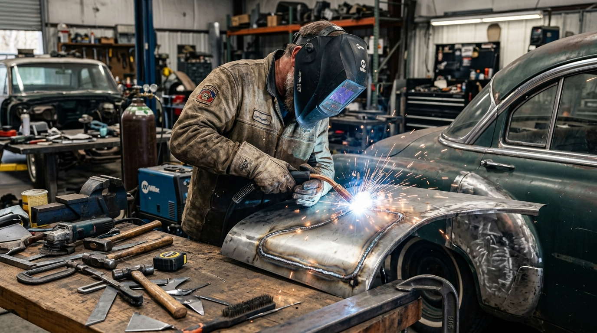

Recuperar a Lataria ou Trocar a Peça: Critérios Técnicos de Segurança e Custo
Recuperar a lataria original quase sempre é possível — e o que decide entre reparo e troca é a integridade estrutural da chapa, o encaixe com as peças vizinhas e o custo real da substituição, não a extensão visual do amassado.

Recuperar a lataria ou trocar a peça depende de três verificações objetivas: a chapa mantém a geometria e a espessura originais, os pontos de fixação no monobloco estão alinhados e o custo da substituição com pintura é de fato menor que o do reparo. Quando as três respostas apontam para o reparo, trocar a peça é prejuízo técnico e financeiro.
A extensão do amassado engana. Uma peça com dano amplo, mas sem rasgo e sem dobra em região de reforço, costuma sair melhor no repuxo com gabarito do que uma peça pequena que perdeu a ancoragem no ponto de solda. Numa funilaria em Osasco com gabarito de alinhamento, é a leitura da estrutura — e não o tamanho da marca — que define o caminho.
Antes de qualquer decisão, vale entender quando o reparo sem repintura é viável: o comparativo entre martelinho de ouro e repintura tradicional mostra em que condições a peça original é preservada e em quais o dano exige funilaria com pintura.
Desponte e corte de lataria traseira: quando a substituição é real
A traseira do carro concentra peças estruturais soldadas de fábrica: painel traseiro, assoalho do porta-malas, longarinas e caixas de roda. Quando o impacto deforma essas regiões, o reparo pode exigir desponte — o corte da área comprometida — e solda de uma seção nova.
O corte é uma decisão de segurança, não de estética. Ele só se justifica quando a chapa perdeu função estrutural: rasgo em região de absorção de impacto, corrosão passante, dobra que impede o retorno ao alinhamento ou pontos de fixação arrancados do monobloco. Fora disso, o reparo com repuxo e gabarito preserva a peça e o comportamento original em caso de nova colisão.
- Solda de seção: exige tratamento anticorrosivo na costura interna, ponto crítico onde a umidade costuma iniciar a ferrugem anos depois.
- Alinhamento pós-solda: a peça nova precisa ser posicionada com gabarito, senão tampa do porta-malas e lanternas deixam de encaixar.
- Vedação: costuras mal vedadas permitem entrada de água e ruído, com infiltração no porta-malas.
- Documentação: reparos estruturais ficam visíveis no laudo cautelar e devem ser declarados na revenda.
Peça paralela: por que aparecem frestas tortas e ruídos
Peça paralela não é sinônimo de peça ruim, mas é sinônimo de tolerância diferente. A carcaça de um para-lama ou capô de reposição pode variar alguns milímetros no vinco, na espessura e no reforço interno — diferença que aparece no encaixe com farol, grade e para-choque.
O resultado prático são frestas irregulares, capô desalinhado, farol alto de um lado e vibração em velocidade. Em muitos casos o ajuste resolve; em outros, a correção exige retrabalho de funilaria e pintura, o que consome a economia obtida na compra da peça.
- Tratamento anticorrosivo: a peça original sai de fábrica com cataforese; a de reposição depende do preparo aplicado na oficina.
- Espessura da chapa: chapas mais finas amassam com mais facilidade e transmitem mais ruído.
- Pontos de fixação: furos e abas fora de posição forçam o alinhamento e comprometem a vedação.
- Procedência: peça usada de desmanche exige laudo de origem e inspeção de integridade antes do uso.
Limites mecânicos da chapa esticada
Toda chapa tem memória elástica: ela se deforma e volta até um limite. Passado esse ponto, o aço sofre encruamento e perde a capacidade de retornar à forma original — é o chamado efeito fundo de lata, aquele estalo ao pressionar a área.
Nesse estágio, o repuxo com spotter e martelo de ponto trabalha o recolhimento do metal, com aquecimento controlado para não destruir a têmpera. Quando a deformação é pequena e a tinta permanece íntegra, o martelinho de ouro resolve sem repintura; quando a chapa está esticada além do retorno, o reparo exige funilaria com preparação e pintura em cabine.
O limite para trocar a peça não é o tamanho do amassado, e sim a impossibilidade de devolver geometria e rigidez. Chapa esticada que não retorna, rasgo em zona de absorção e corrosão passante são os três sinais clássicos de substituição.
Termofusão em para-choques: recuperar ou trocar
Para-choques de polipropileno raramente precisam ser trocados por causa de trinca. A recuperação por termofusão refaz a solda do plástico com material compatível, reconstrói abas de fixação e devolve a peça ao formato antes da pintura.
A vantagem é manter o encaixe original e a tonalidade já existente no carro, evitando a diferença de tom entre peça nova e pintura envelhecida. O serviço é detalhado na página de recuperação de para-choques, que explica o processo de solda plástica e o reforço estrutural.
A substituição passa a ser o caminho quando o dano atinge a estrutura de absorção de impacto, quando o plástico está esfarelado pela exposição ao sol ou quando faltam fragmentos para reconstruir a área. Nesses casos, a peça nova é a opção que devolve função de segurança ao conjunto.
Tabela de decisão: 5 critérios técnicos
A comparação abaixo resume o que a avaliação presencial verifica antes de indicar recuperação ou substituição.
| Critério | Indicado recuperar | Indicado trocar |
|---|---|---|
| Integridade da chapa | Amassado sem rasgo e sem dobra em região de reforço | Rasgo, corrosão passante ou chapa esticada sem retorno |
| Alinhamento estrutural | Gaps recuperáveis com gabarito e repuxo técnico | Pontos de fixação arrancados do monobloco |
| Encaixe com peças vizinhas | Farol, capô e para-lama mantêm fresta uniforme | Frestas irregulares mesmo após ajuste de montagem |
| Proteção anticorrosiva | Galvanização e cataforese de fábrica preservadas | Necessidade de reconstruir a proteção em toda a peça |
| Custo total | Reparo com pintura abaixo da peça nova já pintada | Peça com procedência e pintura sai mais barato que o reparo |

Perguntas Frequentes sobre Recuperar a Lataria ou Trocar a Peça
As respostas abaixo cobrem as dúvidas que mais aparecem na avaliação presencial, quando o proprietário precisa decidir entre reparo e substituição.
Como saber se a lataria pode ser recuperada em vez de trocada?
A decisão começa pela leitura do dano. Se a chapa mantém a forma geral, sem rasgos, sem dobras em regiões de reforço e com os pontos de solda originais intactos, a recuperação é viável. O corte só se justifica quando há estiramento severo, corrosão passante ou quando o reposicionamento não devolve alinhamento e vedação.
Peça paralela é sempre pior que a original recuperada?
Não é uma regra absoluta, mas a peça paralela costuma exigir ajustes de encaixe, apresenta espessura e tratamento anticorrosivo diferentes do original e pode deixar frestas irregulares entre capô, para-lama e farol. Quando a peça de origem pode ser recuperada com segurança, a recuperação preserva o encaixe de fábrica e a originalidade do veículo.
Vale a pena recuperar para-choque trincado ou é melhor trocar?
Na maioria dos casos a recuperação por termofusão é viável, inclusive em trincas e rasgos com abas de fixação quebradas, desde que o plástico não esteja esfarelado. O reparo mantém o encaixe original e evita a diferença de tonalidade de uma peça nova. A troca passa a ser indicada quando o dano atinge a estrutura de absorção de impacto ou quando faltam fragmentos.
Continue Lendo Sobre Reparos de Funilaria
Recuperar ou Trocar? Envie as Fotos e Receba a Avaliação
Mande as imagens do dano no WhatsApp da FG Car e saiba se a peça original pode ser recuperada com segurança, com orçamento transparente e sem compromisso.
⚡ Avaliar Meu Caso no WhatsAppAv. Visconde de Nova Granada, 3121 — Cipava, Osasco/SP — CEP 06075-380
Seg–Sex 08:00–18:00 · Sáb 08:00–12:00